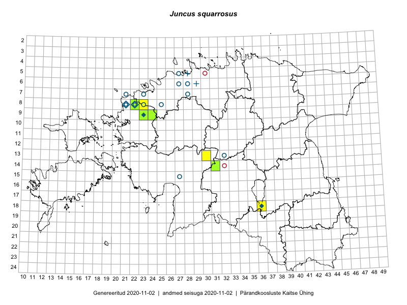

Juncus squarrosus — nõmmluga
Juncaceae :: Juncus squarrosus L. (216)

Kaart põhineb 216 kirjel:
vaatlusi 120
herbaareksemplare 96
Taime kaasaegsed ja ajaloolised leiukohad asuvad 19 ruudus.
Tingmärgid ja ruutude arvud periooditi (U1 / V2 )
█ 2006–2020 (7/–)
◆/◇ 1971–2005 (4/4)
○ 1921–1970 (12/5)
+ kuni 1920 (2/0)
× hävinud (–/4)
? kaheldav (–/0)
| Ruut | Leidja(d) | Leiuaeg | Kirje |
|---|---|---|---|
| 06-27 | V. Sirgo, H. Salasoo | 1934 | ruut/ala: Juncus squarrosus L. |
| 08-22 | T. Ploompuu | 1998-08-17 | ruut/ala: Juncus squarrosus L. |
| 08-22 | botaaniline ekspeditsioon ZBI | 1981-06–1981-07 | ruut/ala: Juncus squarrosus L. |
| 08-25 | J. Rebane | 1938 | ruut/ala: Juncus squarrosus L. |
| 08-21 | botaaniline ekspeditsioon ZBI | 1981-07-04 | ruut/ala: Juncus squarrosus L. |
| 09-23 | botaaniline ekspeditsioon ZBI | 1981-07-08 | ruut/ala: Juncus squarrosus L. |
| 18-36 | Nele Ingerpuu, Heljo Krall | 1987-09-14 | ruut/ala: Juncus squarrosus L. |
| 15-27 | A. Nõmmsalu | 1949-07-14–1949-07-20 | ruut/ala: Juncus squarrosus L. |
| 09-24 | Ott Luuk, Tiit Hallikma | 2016-05-13 | ruut/ala: Juncus squarrosus L. |
| 09-24 | Tiit Hallikma, Ott Luuk | 2016-05-13 | ruut/ala: Juncus squarrosus L. |
| 09-24 | Tiit Hallikma, Ott Luuk | 2016-05-13 | ruut/ala: Juncus squarrosus L. |
| 08-22 | Mari Reitalu, Triin Reitalu, Sirje Azarov | 2016-07-10 | ruut/ala: Juncus squarrosus L. |
| 13-30 | Tõnu Ploompuu, Hannes Pehlak, Marko Veinbergs | 2016-07-21 | ruut/ala: Juncus squarrosus L. |
| 09-23 | Jaak-Albert Metsoja, Mari Metsoja | 2016-07-06 | ruut/ala: Juncus squarrosus L. |
| 09-23 | Jaak-Albert Metsoja, Mari Metsoja | 2016-07-06 | ruut/ala: Juncus squarrosus L. |
| 08-22 | Toomas Kukk, Ilmar Uibopuu | 2017-07-29 | ruut/ala: Juncus squarrosus L. |
| 08-22 | Toomas Kukk, Ilmar Uibopuu | 2017-07-29 | ruut/ala: Juncus squarrosus L. |
| 08-22 | Toomas Kukk, Ilmar Uibopuu | 2017-07-29 | ruut/ala: Juncus squarrosus L. |
| 08-22 | Toomas Kukk, Ilmar Uibopuu | 2017-07-29 | ruut/ala: Juncus squarrosus L. |
| 08-23 | Peedu Saar | 2012-06-02 | ruut/ala: Juncus squarrosus L. |
| 08-23 | Thea Kull, Meeli Mesipuu | 2012-06-02 | ruut/ala: Juncus squarrosus L. |
| 08-23 | Thea Kull, Meeli Mesipuu | 2012-06-02 | ruut/ala: Juncus squarrosus L. |
| 08-23 | Thea Kull, Meeli Mesipuu | 2012-06-02 | ruut/ala: Juncus squarrosus L. |
| 08-23 | Thea Kull, Meeli Mesipuu | 2012-06-02 | ruut/ala: Juncus squarrosus L. |
| 08-23 | Thea Kull, Meeli Mesipuu | 2012-06-02 | ruut/ala: Juncus squarrosus L. |
| 08-23 | Thea Kull, Meeli Mesipuu | 2012-06-02 | ruut/ala: Juncus squarrosus L. |
| 08-23 | Thea Kull, Meeli Mesipuu | 2012-06-02 | ruut/ala: Juncus squarrosus L. |
| 08-23 | Thea Kull, Meeli Mesipuu | 2012-06-02 | ruut/ala: Juncus squarrosus L. |
| 08-23 | Thea Kull, Meeli Mesipuu | 2012-06-02 | ruut/ala: Juncus squarrosus L. |
| 08-23 | Thea Kull, Meeli Mesipuu | 2012-06-02 | ruut/ala: Juncus squarrosus L. |
| 08-23 | Peedu Saar | 2012-06-02 | ruut/ala: Juncus squarrosus L. |
| 08-22 | Eerik Leibak, Laura Kütt, Mari Reitalu | 2012-07-06 | ruut/ala: Juncus squarrosus L. |
| 08-22 | Eerik Leibak, Laura Kütt, Mari Reitalu | 2012-07-06 | ruut/ala: Juncus squarrosus L. |
| 08-22 | Eerik Leibak, Laura Kütt, Mari Reitalu | 2012-07-06 | ruut/ala: Juncus squarrosus L. |
| 08-22 | Eerik Leibak, Laura Kütt, Mari Reitalu | 2012-07-06 | ruut/ala: Juncus squarrosus L. |
| 08-22 | Eerik Leibak, Laura Kütt, Mari Reitalu | 2012-07-07 | ruut/ala: Juncus squarrosus L. |
| 08-22 | Eerik Leibak, Laura Kütt, Mari Reitalu | 2012-07-08 | ruut/ala: Juncus squarrosus L. |
| 08-22 | Eerik Leibak, Laura Kütt, Mari Reitalu | 2012-07-08 | ruut/ala: Juncus squarrosus L. |
| 08-22 | Eerik Leibak, Laura Kütt, Mari Reitalu | 2012-07-08 | ruut/ala: Juncus squarrosus L. |
| 08-22 | Eerik Leibak, Laura Kütt, Mari Reitalu | 2012-07-08 | ruut/ala: Juncus squarrosus L. |
| 08-22 | Toomas Kukk, Timo Luhamäe | 2012-07-08 | ruut/ala: Juncus squarrosus L. |
| 08-22 | Toomas Kukk, Timo Luhamäe | 2012-07-08 | ruut/ala: Juncus squarrosus L. |
| 08-22 | Toomas Kukk, Timo Luhamäe | 2012-07-08 | ruut/ala: Juncus squarrosus L. |
| 08-22 | Toomas Kukk, Timo Luhamäe | 2012-07-08 | ruut/ala: Juncus squarrosus L. |
| 08-22 | Toomas Kukk, Timo Luhamäe | 2012-07-08 | ruut/ala: Juncus squarrosus L. |
| 08-22 | Triin Tanilas, Ott Luuk, Laura Kütt | 2012-07-09 | ruut/ala: Juncus squarrosus L. |
| 08-22 | Triin Tanilas, Ott Luuk, Laura Kütt | 2012-07-09 | ruut/ala: Juncus squarrosus L. |
| 08-22 | Triin Tanilas, Ott Luuk, Laura Kütt | 2012-07-09 | ruut/ala: Juncus squarrosus L. |
| 08-22 | Triin Tanilas, Ott Luuk, Laura Kütt | 2012-07-09 | ruut/ala: Juncus squarrosus L. |
| 08-22 | Triin Tanilas, Ott Luuk, Laura Kütt | 2012-07-09 | ruut/ala: Juncus squarrosus L. |
| 08-22 | Triin Tanilas, Ott Luuk, Laura Kütt | 2012-07-09 | ruut/ala: Juncus squarrosus L. |
| 08-22 | Triin Tanilas, Ott Luuk, Laura Kütt | 2012-07-09 | ruut/ala: Juncus squarrosus L. |
| 09-23 | Eerik Leibak, Ott Luuk | 2012-07-11 | ruut/ala: Juncus squarrosus L. |
| 09-23 | Triin Tanilas, Geron Perens, Ott Luuk | 2012-06-16 | ruut/ala: Juncus squarrosus L. |
| 09-23 | Triin Tanilas, Geron Perens, Ott Luuk | 2012-06-16 | ruut/ala: Juncus squarrosus L. |
| 08-22 | Mare Leis, Thea Kull | 2012-07-18 | ruut/ala: Juncus squarrosus L. |
| 08-23 | Geron Perens, Ott Luuk, Peedu Saar | 2012-06-02 | ruut/ala: Juncus squarrosus L. |
| 08-23 | Geron Perens, Ott Luuk, Peedu Saar | 2012-06-02 | ruut/ala: Juncus squarrosus L. |
| 08-22 | Thea Kull, Meeli Mesipuu | 2012-05-31 | ruut/ala: Juncus squarrosus L. |
| 08-22 | Thea Kull, Meeli Mesipuu | 2012-05-31 | ruut/ala: Juncus squarrosus L. |
| 08-22 | Thea Kull, Meeli Mesipuu | 2012-05-31 | ruut/ala: Juncus squarrosus L. |
| 08-22 | Peedu Saar | 2012-05-31 | ruut/ala: Juncus squarrosus L. |
| 08-22 | Peedu Saar | 2012-05-31 | ruut/ala: Juncus squarrosus L. |
| 08-22 | Peedu Saar | 2012-05-31 | ruut/ala: Juncus squarrosus L. |
| 08-22 | Peedu Saar | 2012-05-31 | ruut/ala: Juncus squarrosus L. |
| 08-22 | Thea Kull, Meeli Mesipuu | 2012-05-31 | ruut/ala: Juncus squarrosus L. |
| 08-22 | Thea Kull, Meeli Mesipuu | 2012-05-31 | ruut/ala: Juncus squarrosus L. |
| 08-22 | Peedu Saar | 2012-05-31 | ruut/ala: Juncus squarrosus L. |
| 08-22 | Peedu Saar | 2012-05-31 | ruut/ala: Juncus squarrosus L. |
| 08-22 | Peedu Saar | 2012-05-31 | ruut/ala: Juncus squarrosus L. |
| 08-22 | Thea Kull, Meeli Mesipuu | 2012-05-31 | ruut/ala: Juncus squarrosus L. |
| 08-22 | Geron Perens, Ott Luuk, Peedu Saar | 2012-05-31 | ruut/ala: Juncus squarrosus L. |
| 08-22 | Geron Perens, Ott Luuk, Peedu Saar | 2012-05-31 | ruut/ala: Juncus squarrosus L. |
| 08-22 | Geron Perens, Ott Luuk, Peedu Saar | 2012-05-31 | ruut/ala: Juncus squarrosus L. |
| 08-22 | Geron Perens, Ott Luuk, Peedu Saar | 2012-05-31 | ruut/ala: Juncus squarrosus L. |
| 08-22 | Geron Perens, Ott Luuk, Peedu Saar | 2012-05-31 | ruut/ala: Juncus squarrosus L. |
| 08-22 | Geron Perens, Ott Luuk, Peedu Saar | 2012-05-31 | ruut/ala: Juncus squarrosus L. |
| 08-22 | Geron Perens, Ott Luuk, Peedu Saar | 2012-05-31 | ruut/ala: Juncus squarrosus L. |
| 08-22 | Meelis Sepp, Peedu Saar | 2012-07-07 | ruut/ala: Juncus squarrosus L. |
| 08-22 | Meelis Sepp, Peedu Saar | 2012-07-07 | ruut/ala: Juncus squarrosus L. |
| 08-22 | Meelis Sepp, Peedu Saar | 2012-07-07 | ruut/ala: Juncus squarrosus L. |
| 08-22 | Meelis Sepp, Peedu Saar | 2012-07-07 | ruut/ala: Juncus squarrosus L. |
| 08-22 | Meelis Sepp, Peedu Saar | 2012-07-07 | ruut/ala: Juncus squarrosus L. |
| 08-22 | Meelis Sepp, Peedu Saar | 2012-07-07 | ruut/ala: Juncus squarrosus L. |
| 08-22 | Meelis Sepp, Peedu Saar | 2012-07-07 | ruut/ala: Juncus squarrosus L. |
| 08-22 | Meelis Sepp, Peedu Saar | 2012-07-07 | ruut/ala: Juncus squarrosus L. |
| 08-22 | Meelis Sepp, Peedu Saar | 2012-07-07 | ruut/ala: Juncus squarrosus L. |
| 08-22 | Meelis Sepp, Peedu Saar | 2012-07-07 | ruut/ala: Juncus squarrosus L. |
| 08-22 | Meelis Sepp, Peedu Saar | 2012-07-07 | ruut/ala: Juncus squarrosus L. |
| 08-22 | Ott Luuk, Timo Luhamäe | 2012-07-07 | ruut/ala: Juncus squarrosus L. |
| 08-22 | Ott Luuk, Timo Luhamäe | 2012-07-07 | ruut/ala: Juncus squarrosus L. |
| 08-22 | Meelis Sepp, Peedu Saar | 2012-07-08 | ruut/ala: Juncus squarrosus L. |
| 08-22 | Meelis Sepp, Peedu Saar | 2012-07-08 | ruut/ala: Juncus squarrosus L. |
| 08-22 | Meelis Sepp, Peedu Saar | 2012-07-08 | ruut/ala: Juncus squarrosus L. |
| 08-22 | Meelis Sepp, Peedu Saar | 2012-07-08 | ruut/ala: Juncus squarrosus L. |
| 08-22 | Meelis Sepp, Peedu Saar | 2012-07-08 | ruut/ala: Juncus squarrosus L. |
| 08-22 | Meelis Sepp, Peedu Saar | 2012-07-08 | ruut/ala: Juncus squarrosus L. |
| 08-22 | Ott Luuk, Toomas Kukk, Timo Luhamäe | 2012-07-08 | ruut/ala: Juncus squarrosus L. |
| 08-22 | Ott Luuk, Toomas Kukk, Timo Luhamäe | 2012-07-08 | ruut/ala: Juncus squarrosus L. |
| 08-22 | Ott Luuk, Toomas Kukk, Timo Luhamäe | 2012-07-08 | ruut/ala: Juncus squarrosus L. |
| 08-22 | Ott Luuk, Toomas Kukk, Timo Luhamäe | 2012-07-08 | ruut/ala: Juncus squarrosus L. |
| 08-23 | Meelis Sepp, Peedu Saar | 2012-07-09 | ruut/ala: Juncus squarrosus L. |
| 08-23 | Meelis Sepp, Peedu Saar | 2012-07-09 | ruut/ala: Juncus squarrosus L. |
| 08-23 | Meelis Sepp, Peedu Saar | 2012-07-09 | ruut/ala: Juncus squarrosus L. |
| 08-23 | Meelis Sepp, Peedu Saar | 2012-07-09 | ruut/ala: Juncus squarrosus L. |
| 08-23 | Meelis Sepp, Peedu Saar | 2012-07-09 | ruut/ala: Juncus squarrosus L. |
| 08-23 | Meelis Sepp, Peedu Saar | 2012-07-09 | ruut/ala: Juncus squarrosus L. |
| 08-22 | Meelis Sepp, Peedu Saar | 2012-07-09 | ruut/ala: Juncus squarrosus L. |
| 08-22 | Triin Tanilas, Ott Luuk, Laura Kütt | 2012-07-09 | ruut/ala: Juncus squarrosus L. |
| 08-22 | Triin Tanilas, Ott Luuk, Laura Kütt | 2012-07-09 | ruut/ala: Juncus squarrosus L. |
| 08-22 | Triin Tanilas, Ott Luuk, Laura Kütt | 2012-07-09 | ruut/ala: Juncus squarrosus L. |
| 08-22 | Triin Tanilas, Ott Luuk, Laura Kütt | 2012-07-09 | ruut/ala: Juncus squarrosus L. |
| 08-22 | Triin Tanilas, Ott Luuk, Laura Kütt | 2012-07-09 | ruut/ala: Juncus squarrosus L. |
| 08-22 | Triin Tanilas, Ott Luuk, Laura Kütt | 2012-07-09 | ruut/ala: Juncus squarrosus L. |
| 08-22 | Peedu Saar | 2019-07-27 | ruut/ala: Juncus squarrosus L. |
| 08-22 | Peedu Saar | 2019-07-27 | ruut/ala: Juncus squarrosus L. |
| 08-22 | Tõnu Ploompuu | 2007 | ruut/ala: Juncus squarrosus L. |
| 08-22 | Ott Luuk, Peedu Saar, Sten Mander, Kersti Tambets, Kristine Fenske | 2019-08-22 | ruut/ala: Juncus squarrosus L. |
| 18-36 | Thea Kull | 2013-08-19 | ruut/ala: Juncus squarrosus L. |
| 08-22 | Thea Kull | 2013-08-15 | ruut/ala: Juncus squarrosus L. |
| 08-22 | Ü. Kukk | 1977-06-28 | TU250614: Juncus squarrosus L. |
| 08-22 | Karl Eichwald | 1938-06-30 | TU250615: Juncus squarrosus L. |
| 08-22 | Kai Lang | 1960-07-06 | TU250617: Juncus squarrosus L. |
| 06-27 | Albert Üksip | 1944-06-28 | TU250618: Juncus squarrosus L. |
| 08-22 | Karl Eichwald | 1938-07-01 | TU250622: Juncus squarrosus L. |
| 08-22 | Karl Eichwald | 1938-07-01 | TU250623: Juncus squarrosus L. |
| 08-22 | Karl Eichwald | 1938-06-30 | TU250624: Juncus squarrosus L. |
| 08-22 | Karl Eichwald | 1938-06-30 | TU250625: Juncus squarrosus L. |
| 08-22 | T. Lippmaa | 1933-07-09 | TU250626: Juncus squarrosus L. |
| 08-22 | T. Lippmaa | 1933-07-09 | TU250629: Juncus squarrosus L. |
| 08-22 | T. Lippmaa | 1933-07-09 | TU250630: Juncus squarrosus L. |
| 08-22 | T. Lippmaa | 1933-07-09 | TU250631: Juncus squarrosus L. |
| 08-22 | T. Lippmaa | 1933-07-09 | TU250632: Juncus squarrosus L. |
| 08-22 | T. Lippmaa | 1933-07-09 | TU250633: Juncus squarrosus L. |
| 06-27 | Albert Üksip | 1928-07-15 | TU250634: Juncus squarrosus L. |
| 05-28 | Gerhard Pahnsch | 1875-08-14 | TU250639: Juncus squarrosus L. |
| 05-28 | Gerhard Pahnsch | 1875-08-14 | TU250640: Juncus squarrosus L. |
| 05-28 | Gerhard Pahnsch | 1875-08-14 | TU250641: Juncus squarrosus L. |
| 08-22 | Karl Eichwald | 1938-07-01 | TU250642: Juncus squarrosus L. |
| 08-22 | Karl Eichwald | 1938-06-30 | TU250643: Juncus squarrosus L. |
| 08-22 | Karl Eichwald | 1938-06-30 | TU250644: Juncus squarrosus L. |
| 05-28 | G. Pahnsch | 1875-08-14 | TU255600: Juncus squarrosus L. |
| 05-28 | G. Pahnsch | 1875-08-14 | TU255601: Juncus squarrosus L. |
| 05-28 | G. Pahnsch | 1875-08-14 | TU255602: Juncus squarrosus L. |
| 05-28 | G. Pahnsch | 1875-08-14 | TU255603: Juncus squarrosus L. |
| 05-28 | G. Pahnsch | 1875-08-14 | TU255604: Juncus squarrosus L. |
| 05-28 | R. Lehbert | 1879-07-26 | TAM0059478: Juncus squarrosus L. |
| 05-28 | R. Lehbert | 1899-07 | TAM0059479: Juncus squarrosus L. |
| 06-29 | R. Lehbert | 1910-08-19 | TAM0059480: Juncus squarrosus L. |
| 06-29 | R. Lehbert | 1910-08-19 | TAM0059481: Juncus squarrosus L. |
| 08-22 | Õie Jaagomäe | 1981-07-16 | TAM0023356: Juncus squarrosus L. |
| 08-22 | Õie Jaagomäe | 1977-06-28 | TAM0023357: Juncus squarrosus L. |
| 08-22 | Õie Jaagomäe | 1977-06-28 | TAM0023358: Juncus squarrosus L. |
| 05-27 | P. Thomson | 1921-07-09 | TAM0023384: Juncus squarrosus L. |
| 05-27 | Th. Nenjukov | 1921-07-09 | TAM0023385: Juncus squarrosus L. |
| 06-28 | H. Salasoo | 1934-07-09 | TAM0023386: Juncus squarrosus L. |
| 07-28 | H. Salasoo | 1936-06-23 | TAM0023387: Juncus squarrosus L. |
| 06-27 | G. Vilbaste | 1947-09-08 | TAM0023388: Juncus squarrosus L. |
| 06-27 | E. Peikel | 1945-06-23 | TAM0023389: Juncus squarrosus L. |
| 05-27 | P. Thomson | 1921-07-09 | TAM0063974: Juncus squarrosus L. |
| 06-27 | G. Vilbaste | 1947-09-08 | TAM0063975: Juncus squarrosus L. |
| 06-27 | G. Vilbaste | 1947-09-08 | TAM0063976: Juncus squarrosus L. |
| 06-27 | G. Vilbaste | 1947-09-08 | TAM0063977: Juncus squarrosus L. |
| 06-29 | R. Lehbert | 1910-08-19 | TAM0086258: Juncus squarrosus L. |
| 07-21 | Heinrich Aasamaa | 1935-07-23 | TAM0087091: Juncus squarrosus L. |
| 07-21 | Heinrich Aasamaa | 1935-07-22 | TAM0087092: Juncus squarrosus L. |
| 08-22 | Heinrich Aasamaa | 1935-07-23 | TAM0087093: Juncus squarrosus L. |
| 07-21 | Heinrich Aasamaa | 1935-07-23 | TAM0087094: Juncus squarrosus L. |
| 05-28 | Sengbusch | TAM0087303: Juncus squarrosus L. | |
| 05-28 | G. Pahnsch | TAM0087304: Juncus squarrosus L. | |
| 05-28 | G. Pahnsch | TAM0087306: Juncus squarrosus L. | |
| 05-28 | G. Pahnsch | 1875-08-14 | TAM0087307: Juncus squarrosus L. |
| 05-28 | G. Pahnsch | 1859 | TAM0087309: Juncus squarrosus L. |
| 05-28 | G. Pahnsch | 1876-07-10 | TAM0087311: Juncus squarrosus L. |
| 05-28 | Russow | TAM0087313: Juncus squarrosus L. | |
| 08-22 | Julius Lunts | 1933-08-06 | TAM0094148: Juncus squarrosus L. |
| 08-22 | Julius Lunts | 1933-08-06 | TAM0094149: Juncus squarrosus L. |
| 08-22 | Julius Lunts | 1933-08-06 | TAM0094150: Juncus squarrosus L. |
| 06-27 | H. Salasoo | 1934-07-09 | TAA0057456: Juncus squarrosus L. |
| 06-27 | H. Salasoo | 1934-07-09 | TAA0057457: Juncus squarrosus L. |
| 06-27 | H. Salasoo | 1934-07-09 | TAA0057458: Juncus squarrosus L. |
| 06-27 | H. Salasoo | 1934-07-09 | TAA0057459: Juncus squarrosus L. |
| 08-22 | M. Leht, Tiina Ksenofontova | 1981-07-08 | TAA0057460: Juncus squarrosus L. |
| 08-22 | Gustav Vilbaste | 1933-08-06 | TAA0057461: Juncus squarrosus L. |
| 08-22 | Gustav Vilbaste | 1933-08-06 | TAA0057462: Juncus squarrosus L. |
| 08-22 | H. Rebassoo | 1966-07-27 | TAA0057463: Juncus squarrosus L. |
| 08-22 | Linda Viljasoo | 1968-07-26 | TAA0057464: Juncus squarrosus L. |
| 08-22 | Linda Viljasoo | 1968-07-26 | TAA0057465: Juncus squarrosus L. |
| 08-22 | Linda Viljasoo | 1968-07-26 | TAA0057466: Juncus squarrosus L. |
| 08-22 | Linda Viljasoo | 1968-07-26 | TAA0057467: Juncus squarrosus L. |
| 08-22 | Linda Viljasoo | 1981-07-04 | TAA0057468: Juncus squarrosus L. |
| 08-22 | H. Krall | 1981-07-08 | TAA0057469: Juncus squarrosus L. |
| 08-22 | H. Krall | 1981-07-08 | TAA0057470: Juncus squarrosus L. |
| 13-32 | Vilma Kuusk | 1965-06-25 | TAA0057471: Juncus squarrosus L. |
| 13-32 | Vilma Kuusk | 1965-06-25 | TAA0057472: Juncus squarrosus L. |
| 08-21 | M. Kask | 1960-07-17 | TAA0057473: Juncus squarrosus L. |
| 08-21 | M. Kask | 1960-07-17 | TAA0057474: Juncus squarrosus L. |
| 08-22 | Silvia Talts | 1968-07-26 | TAA0057475: Juncus squarrosus L. |
| 08-23 | A. Üksip, S. Talts, L. Viljasoo | 1960-07-06 | TAA0057476: Juncus squarrosus L. |
| 08-23 | A. Üksip, Linda Viljasoo, Silvia Talts | 1960-07-06 | TAA0057477: Juncus squarrosus L. |
| 08-22 | K. Lang, Ella Tammemägi | 1960-07-06 | TAA0057478: Juncus squarrosus L. |
| 08-22 | K. Lang, Ella Tammemägi | 1960-07-06 | TAA0057479: Juncus squarrosus L. |
| 08-22 | K. Lang, Ella Tammemägi | 1960-07-06 | TAA0057480: Juncus squarrosus L. |
| 08-23 | Erast Parmasto | 1951-07-13 | TAA0057481: Juncus squarrosus L. |
| 08-22 | Erast Parmasto | 1951-07-15 | TAA0057482: Juncus squarrosus L. |
| 08-22 | Erast Parmasto | 1951-07-15 | TAA0057483: Juncus squarrosus L. |
| 07-23 | Vilma Kuusk | 1951-07-13 | TAA0057484: Juncus squarrosus L. |
| 06-27 | Albert Üksip | 1944-06-28 | TAA0057485: Juncus squarrosus L. |
| 18-36 | H. Krall | 1987-05-18 | TAA0057486: Juncus squarrosus L. |
| 08-22 | Peedu Saar, Meelis Sepp | 2012-07-07 | TAA0116673: Juncus squarrosus L. |
| 08-22 | Ott Luuk | 2012-05-31 | TAA0116714: Juncus squarrosus L. |
| 08-22 | Ott Luuk, Meeli Mesipuu, Thea Kull | 2012-05-31 | TAA0116715: Juncus squarrosus L. |
| 08-22 | Toomas Kukk | 2012-07-08 | TAA0112506: Juncus squarrosus L. |
| 09-23 | Jaak-Albert Metsoja | 2016-07-06 | TAA0134072: Juncus squarrosus L. |
| 14-31 | Oliver Parrest, Toivo Sepp | 2016-07-21 | TAA0138152: Juncus squarrosus L. |
| 09-24 | Ott Luuk, Tiit Hallikma | 2016-05-12 | TAA0139039: Juncus squarrosus L. |
Ruutude arv uue atlase andmekogu järgi. Muuhulgas arvestab vanemat herbaariumi, 2005. aasta atlase välitöölehtedelt uuesti digitaliseeritud andmeid jne. Uue atlase andmekogust pärinevad andmed on kaardile kantud siniste sümbolitega.↩︎
Ruutude arv 2005. aasta atlase (Kukk, T., Kull, T., Eesti taimede levikuatlas. Eesti Maaülikool, Põllumajandus- ja Keskkonnainstituut, Tartu, 2005) järgi. Andmeallikana on kasutatud levik.exe programmi, kus igas ruudus on registreeritud vaid uusim leid. Seetõttu on vanemate perioodide kohta andmed puudulikud. Kasutatud levik.exe andmestikus leidub mõningaid kõrvalekaldeid atlase trükis ilmunud versioonist, sagedamini tarnade ja käpaliste seas. Lisaks leidub selles andmestikus valik liike (peamiselt väheste leidudega tulnuktaimed), mille kaarte trükis ei avaldatud. Vana atlase andmed ruutudest, milles ei ole uue atlase andmekogus leide enne 2006. aastat, on kaardil esitatud punaste sümbolitega. Vana atlase andmetel hävinud ja kaheldavaid leiukohti pole hilisemate (taas)leidude põhjal korrigeeritud.↩︎